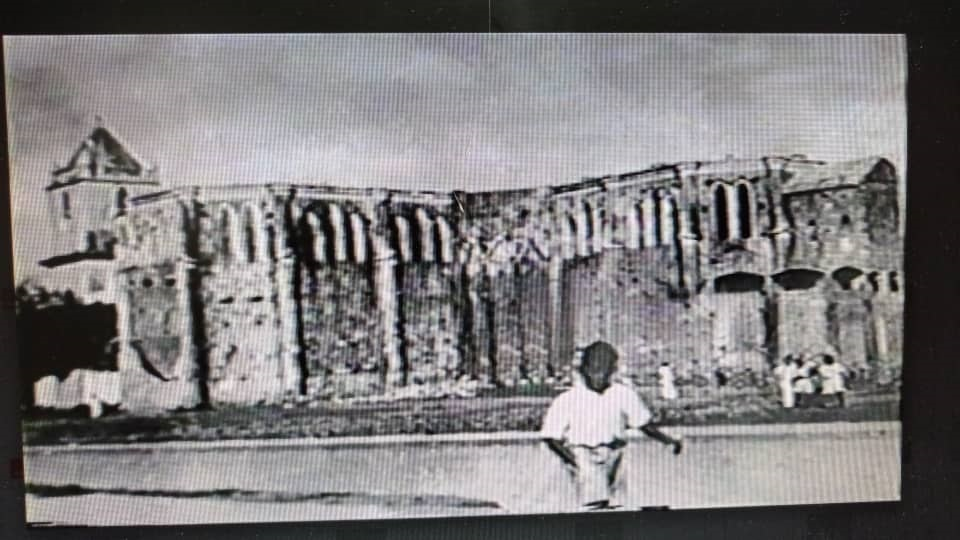

La primitiva iglesia de Porlamar fue destruida por piratas franceses en el año 1555, quienes la quemaron y se llevaron las campanas y los ornamentos. Para el año de 1833 venía sirviendo de Iglesia de Porlamar una casa construida por el Sr. Vicente Rodríguez ubicada en la calle Guevara. En el año 1853 empiezan la construcción de un nuevo Templo (ubicado en lo que es hoy en día el Boulevar Guevara), gracias a la iniciativa del Gobernador; General Francisco Esteban Gómez, que al ver la necesidad de levantar un nuevo Templo, pide la colaboración monetaria del pueblo de Porlamar, es así como se inician los trabajos de construcción de la Iglesia San Nicolás de Bari, cuyo nombre es en honor al patrono de Porlamar.
Para el año de 1860 la iglesia San Nicolás de Bari todavía estaba sin terminar; pero cuatro años más tarde se dio al culto, realizándose la bendición el 8 de diciembre de 1864. El 5 de diciembre de 1897 se forma una junta presidida por el Dr. Luis Ortega; con el fin de recaudar fondos para la continuación de los trabajos de construcción y remodelación del Templo, pues materialmente, la iglesia se estaba cayendo en pedazos.

Francisco Esteban Gómez
Templo San Nicolás de Bari
En 1901 comenzó la reconstrucción de las torres del templo, y solo fue hasta el 21 de septiembre de 1906 cuando se celebró la primera misa en el nuevo templo. Las campanas de bronce ubicadas en las torres de la iglesia fueron adquiridas entre los años de 1909 y 1911. El reloj colocado en la torre sur, fue costeado por la comunidad Siria radicada en Porlamar y se estrenó en 1914. El 12 de julio de 1922, se estableció en esta ciudad la Misión Carmelita, presidida por el sacerdote Reverendo Fray Elías María Sendra (vino acompañado por el Padre Espiridión Cabrera y el Hermano Ludovico Ayet); con él cual reinician con gran empuje los trabajos del templo, donde se concibe el proyecto de una gran Basílica para esta ciudad.